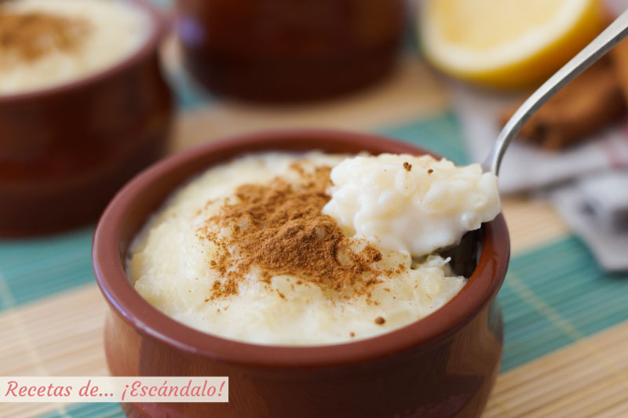
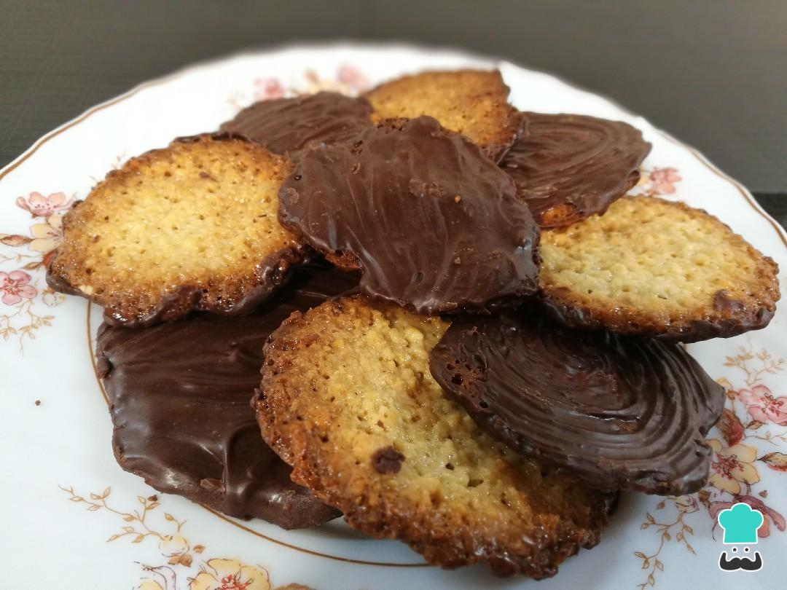
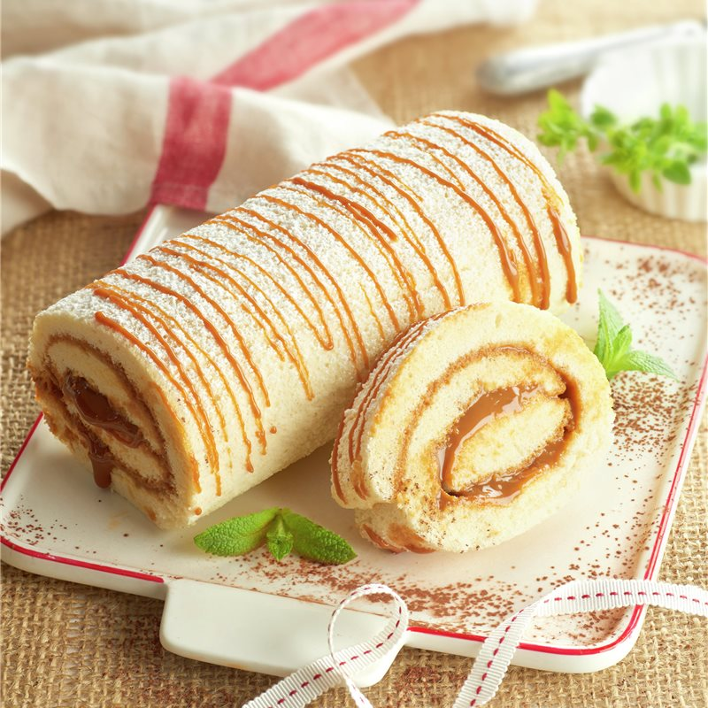

ULTRAINSTINTO
Inicio
Acerca de
Servicios
Contacto
Ser Usuario
Para los más golosos
Frutas de Aragón
Guirlache
Arroz con leche

Moscovitas

Polkas de Torrelavega
Cocas
Brazo de gitano

Tarta de Santiago
Leche frita
Cuajada